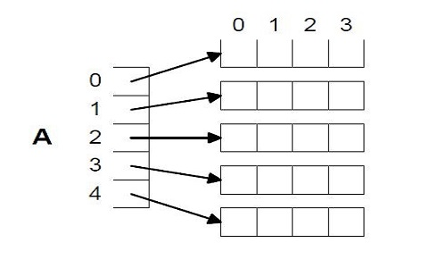
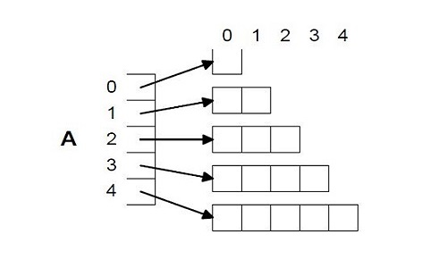

Dynamically Allocating 2D Arrays
Can not simply dynamically allocate 2D (or higher) array Idea - allocate an array of pointers (first dimension), make each pointer point to a 1D array of the appropriate size Can treat result as 2D array

float **A; /* A is an array (pointer) of float
pointers */
int I;
A = (float **) calloc(5,sizeof(float *));
/* A is a 1D array (size 5) of float pointers */
for (I = 0; I < 5; I++){
A[I] = (float *)calloc(4,sizeof(float));
}
/* Each element of array points to an array of 4 float variables */
/* A[I][J] is the Jth entry in the array that the Ith member of A
points to */
Non-Square 2D Arrays
No need to allocate square 2D arrays:
float **A;
int I;
A = (float **) calloc(5,sizeof(float *));
for (I = 0; I < 5; I++){
A[I] = (float **)calloc(I+1,sizeof(float));
}